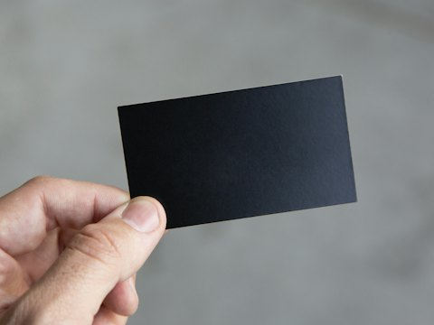
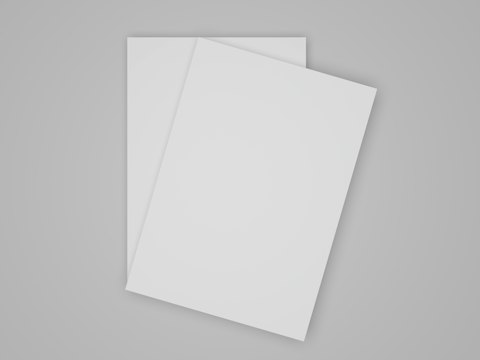
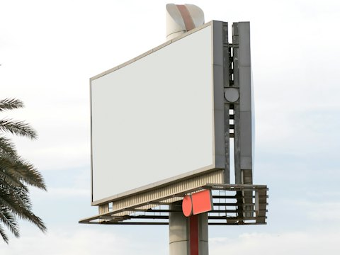
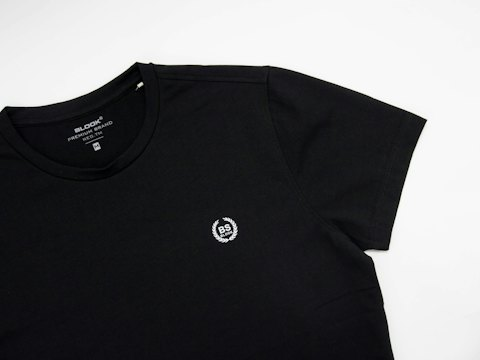

Hamma bosma ishlari — bir joyda.

115+Mahsulot va xizmat
50 000+Mijoz · 5+ yil
Xizmatlar10 yo'nalish · 115 mahsulotBarchasi

Ofis poligrafiyasi13 mahsulot
Reklama poligrafiyasi17 mahsulot
Katta format11 mahsulot Qadoq va yorliqlar12 mahsulot Suvenir va brending14 mahsulot
Kiyimga bosma8 mahsulotMaketni Telegramga yuboring
PDF / AICMYK300 dpi3 mm zapas
@wpmaxuz ga yozish